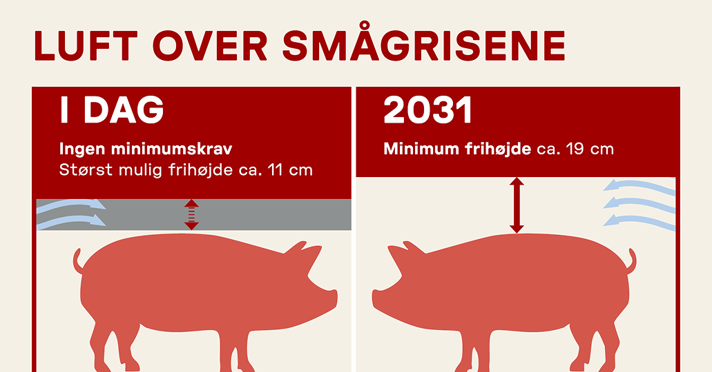
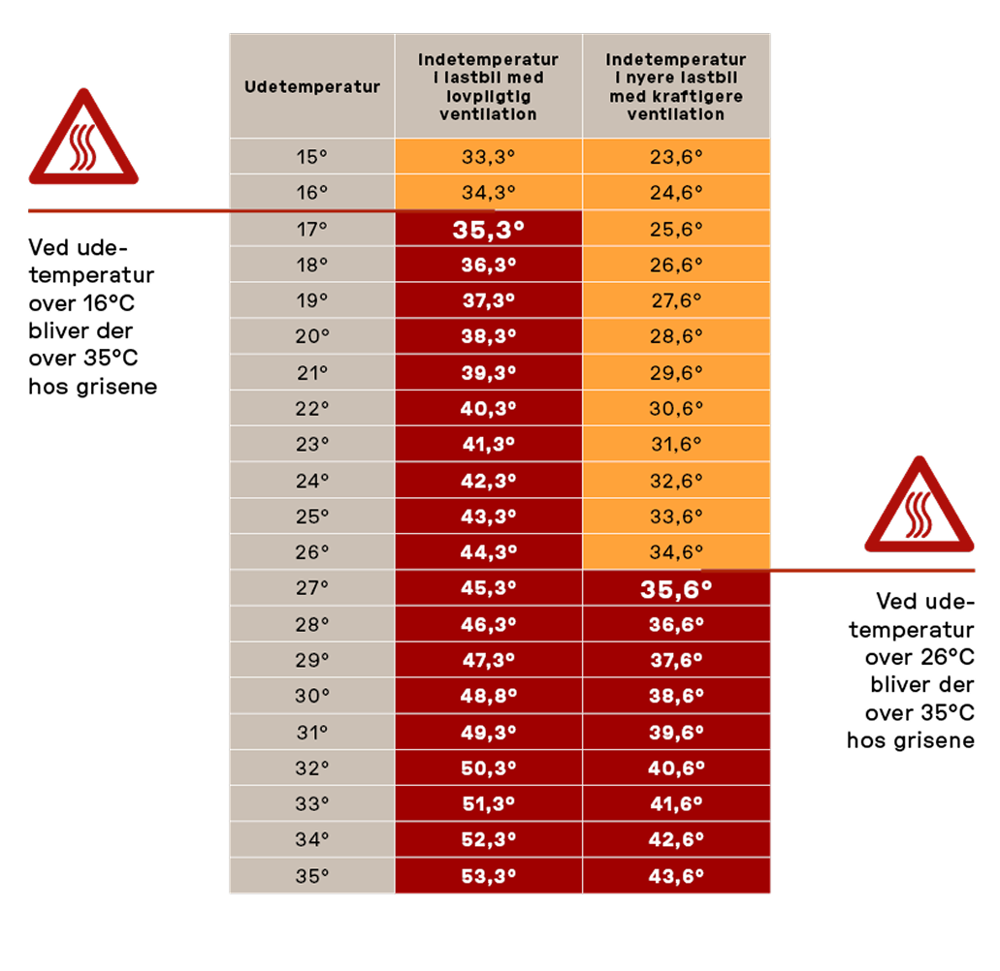

STOP BRUTALE DYRETRANSPORTER
Dyretransporter og god dyrevelfærd går aldrig hånd i hånd. Derfor skal dyretransporter være så korte som mulige. Ingen dyretransporter bør vare mere end 8 timer, og ingen levende dyr må transporteres ud af EU.

Vi kræver bedre transportvilkår
Transport af dyr i industrilandbruget bliver aldrig god dyrevelfærd. Derfor bør transporterne begrænses så meget som muligt og gennemføres så skånsomt som muligt for dyrene. De nuværende regler for transport af landbrugsdyr er desværre meget lempelige, og det betyder, at der er stor risiko for, at dyrene udsættes for lidelse under transporterne. Også når reglerne bliver overholdt! Det er på høje tide, at transportreglerne ændres, så lovgivningen får et langt større fokus på dyrevelfærd til gavn for de millioner af dyr, der hvert eneste år transporteres ud af Danmark. I Dyrenes Beskyttelse arbejder vi blandt andet for:
- Styrket kontrol af dyrenes forhold på eksportbilen ved afgang.
- Loft over transporttiden for dyr til både opfedning og slagtning.
- Forbud mod lange transporter af spædekalve.
- Stop for transporter af dyr til lande, hvor mindstekravene for dyrevelfærd ikke kan overholdes.
- Skærpelse af reglerne for dyretransporter i hele EU.
- At transporten af levende landbrugsdyr videst muligt erstattes af transport af kød og andre animalske produkter.
Grisetransport
Hvert år sendes mange millioner grise ud på lange opslidende dyretransporter fra europæiske lande. På tværs af landegrænser transporteres slagtedyr, avlsdyr og dyr til opfedning i tæt pakkede lastbiler under stærkt kritisable forhold. I 2025 har grisetransporter været et fokusområde i organisationen. Det resulterede blandt andet i, at vi fulgte efter en transport gennem Europa, der fuskede med dokumenterne, så grisene endte på ulovligt lange og varme transporter.
Regeringen indfører minimumskrav til etagehøjden på transporter af smågrise. Kravene gælder dog først fra 2031, så det er fortsat et massivt problem med manglende god ventilation hen over ryggen på dyrene. Cirka 14 millioner danske smågrise transporteres årligt på tværs af Europa. Det er en kraftig stigning, siden EU-reglerne blev vedtaget i 2005, hvor der blev eksporteret knap 4 millioner smågrise fra Danmark.

Høje temperaturer og hundredvis af dyr stuvet sammen på en lastbil uden køleanlæg er en horribel kombination. Ikke desto mindre sker det for millioner af danske grise hvert år. Hvert år transporteres millioner af danske smågrise ud af landet – også i de varme sommermåneder. Grise er særligt følsomme over for varme, og temperaturen i lastvognene må derfor kun kortvarigt overstige 30 °C og aldrig 35 °C. Men en ingeniørberegning peger på, at den grænse let overskrides selv ved moderate udetemperaturer, hvis transporterne holder stille på vejen.

Modelberegningen estimerer, hvor varmt der bliver på vognladet ved en given udetemperatur, når der tages højde for den varme, grisene afgiver, samt lastbilens evne til at fjerne varme via mekanisk ventilation. Der er fokus på to scenarier: ét hvor ventilationskapaciteten kun lige lever op til lovens minimumskrav og ét med næsten dobbelt så stor kapacitet.
I begge tilfælde bliver temperaturen i modellen kritisk for grisene, hvis lastbilen holder stille i én time:
- Med den lovpligtige ventilation stiger temperaturen over 35 °C ved 16 °C udenfor.
- Med dobbelt så kraftig ventilation stiger temperaturen over 35 °C ved 26 °C udenfor.
Selv med kraftig mekanisk ventilation vil varmegrænsen i teorien kunne blive overskredet i almindeligt dansk sommervejr – hvis bilen står stille i en time.
Kalvetransporter
Mange tusinde danske spædekalve sulter og tørster på lange transporter, idet det ikke kan sikres, at de får tilstrækkeligt foder eller vand til at dække deres behov. Sulten og tørsten kan være så langvarig, at kalvene udsættes for betydelig lidelse. Stadig flere spædekalve sendes på lange transporter ud af Danmark. I 2021 blev 40.546 kalve sendt på lange ture ud af landet. Det er 60 pct. flere end i 2016. Stikprøver viser, at så godt som alle kalvene (over 99 pct.) er under otte uger gamle på afsendelsestidspunktet.
Forskerne fra Aarhus Universitet har fundet meget få studier på området. En undersøgelse viser dog, at kalve har svært ved at indtage vand fra drikkenipler selv i et staldmiljø. Problemet er, at kalve er såkaldte sugedrikkere, hvorfor det er mest naturligt for dem at drikke vand fra en overflade, eksempelvis fra en spand.
Et andet studie viser, at jo yngre kalvene er, desto sværere har de ved at vænne sig til nyt udstyr. Det er særligt problematisk, da kalve har en hurtigere vandomsætning, jo yngre de er. Det betyder, at små kalve er nødt til at indtage vand oftere for at opretholde deres vandbalance og undgå dehydrering end ældre dyr. På de ugentlige transporter fra Danmark til primært Holland sættes kalve, hovedparten få uger gamle, sammen i nye grupper i op til 17 timer under stressende og fremmede forhold.
TEST DIN VIDEN
Hvor meget ved du egentlig om dyretransporter?
Bliv oplyst: